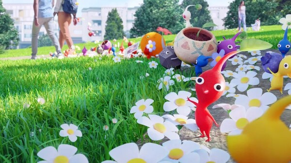
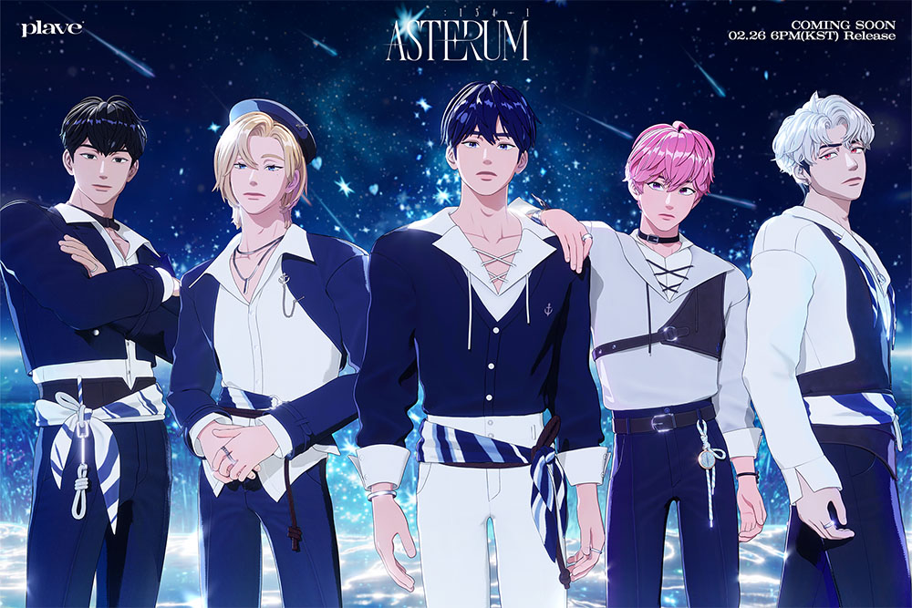

경계를 허물다: XR과 버추얼이 바꾸는 미래 |
||
 |
최근 pikmin bloom(피크민블룸)이라는 게임이 유행 중이다. pikmin bloom은 한 때 유행했던 포켓몬고와 비슷한 게임으로 증강 현실(AR)게임이다. 여기서 말하는 AR은 현실 세계에 디지털 콘텐츠를 겹쳐 보여주는 기술로, 사용자가 주변 환경과 상호작용하면서 정보를 실시간으로 얻을 수 있다. 이외에도 사용자가 완전히 가상의 환경에 몰입해 현실 세계와 단절된 경험을 제공하는 가상 현실(VR), 현실과 가상 요소가 결합해 상호작용이 가능하도록 하는혼합 현실(MR), 그리고 이들을 모두 포함하는 확장 현실(XR)이 있다. XR은 가상 세계를 결합해 다양한 방식의 몰입형 경험을 제공한다. XR은 현재 교육, 의료, 엔터테인먼트 등 다양한 분야에서 혁신을 일으키고 있으며, 몰입감 있는 상호작용을 가능하게 하고 있다. 앞으로 5G와 인공지능의 발전에 따라 XR은 더 다양한 산업에서 활용되며, 우리의 일상과 경제를 크게 변화시킬 것으로 기대된다. | |
"메타버스: "정책기 속에서 피어나는 새로운 산업" |
"버추얼 산업: 인터넷 방송과 가상 아이돌의 시대" |
|
| 메타버스는 가상 세계와 현실이 융합된 디지털 공간으로, 사용자가 아바타를 통해 소통하고 다양한 활동을 할 수 있는 플랫폼이다. 현재 메타버스 산업은 정책기에 접어들고 있는데, 이는 여러 나라가 관련 법률과 규제를 마련하고 산업적 기회를 탐색하는 과정에 있다는 의미이다. 기술이 급격히 발전함에 따라 메타버스가 디지털 경제의 중요한 축으로 자리 잡을 것으로 기대되며, 정부와 기업들은 이 기술을 활용한 새로운 비즈니스 모델과 일자리를 창출하기 위해 정책적 지원을 아끼지 않고 있다. 미래에는 교육, 직업, 경제활동 등 다양한 분야가 메타버스 속에서 이루어지게 될 것이며, 물리적 제약 없이 전 세계가 연결되는 새로운 경제 구조가 등장할 것이다. 또한, 메타버스는 가상 자산과 NFT와 같은 블록체인 기술과도 밀접하게 연결되어 있어 디지털 소유권과 경제적 거래의 새로운 패러다임을 제시할 전망이다. | 버추얼 산업은 디지털 캐릭터가 실제 사람처럼 소통하고 활동하는 새로운 형태의 엔터테인먼트 산업이다. 특히 인터넷 방송과 버추얼 아이돌의 인기는 나날이 높아지고 있으며, 팬들과 실시간으로 소통하는 방식의 새로운 콘텐츠가 주목받고 있다. 현재 버추얼 아이돌은 독자적인 팬층을 형성하고 있으며, 디지털 아바타를 활용한 방송 진행자와 가수들이 등장해 다양한 무대에서 활동하고 있다. 이러한 버추얼 캐릭터들은 현실과 구분하기 어려울 정도로 정교한 기술을 통해 만들어져, 단순한 디지털 캐릭터를 넘어 하나의 독립된 인격체처럼 받아들여지고 있다. | |
"새로운 아이돌 시대: 플레이브가 만든 가상과 현실의 융합" |
||
 |
특히 국내에서는 버추얼 아티스트 그룹 플레이브(PLAVE)가 그 중심에 있다. 플레이브(PLAVE)는 가상의 경계를 넘어 현실에서 진정한 아이돌로 자리 잡은 그룹이다. 그들은 단순히 버추얼 캐릭터로서의 한계를 뛰어넘어, 실제 아이돌과 다름없는 무대와 실력을 선보이며 신입 아이돌답지 않은 성과를 내고 있다. 최근 MBC 쇼! 음악중심에서 1위를 차지한 데 이어, MAMA 시상식에도 출연하며 그들의 입지를 더욱 공고히 하고 있다. | |
| 음반 성적 역시 눈부시다. 그들의 두 번째 미니앨범 ASTERUM: 134-1은 첫 주에만 56만 장 이상의 판매고를 올리며 서클 차트 상위권을 차지했으며, 멜론의 'Billions Club'에 가장 빠르게 진입하는 기록을 세우는 등, 기존의 인기 아이돌 그룹들과 어깨를 나란히 하고 있다. | ||
| 플레이브가 이렇게 인기를 얻을 수 있는 이유에는 실력과 진정성이 있다. 이들은 뛰어난 보컬과 퍼포먼스로 퀄리티 높은 무대를 선보인다. 뿐만 아니라, 팬들과의 실시간 소통을 통해 깊은 유대감을 형성하고 있으며, 팬들은 캐릭터 속 그들의 내면과 인간적인 면모를 더 잘 볼 수 있다는 점에서 매력을 느끼고 있다. 기술적 요소를 통해 구현된 가상이지만, 이들은 인간미와 진정성으로 팬들의 사랑을 받으며 새로운 형태의 아이돌로 자리매김하고 있다. | ||
| 이러한 성공은 버추얼 아이돌의 새로운 가능성을 보여주며, 앞으로도 이들이 만들어갈 가상과 현실의 융합이 더욱 기대된다. | ||
XR, 메타버스, 그리고 버추얼 산업은 빠르게 발전하며 우리의 일상과 산업 전반에 큰 변화를 가져오고 있다. 이 기술들은 현실과 가상의 경계를 허물고, 새로운 형태의 경험과 경제적 기회를 제공하고 있다. 앞으로 5G와 인공지능 기술이 더욱 발전하면서 XR과 메타버스의 적용 범위는 확장될 것이며, 버추얼 아이돌과 같은 디지털 캐릭터들은 더 많은 산업에서 영향력을 발휘할 것이다. 이러한 변화 속에서 우리는 가상과 현실이 조화를 이루는 새로운 미래를 맞이하게 될 것이다. |
||